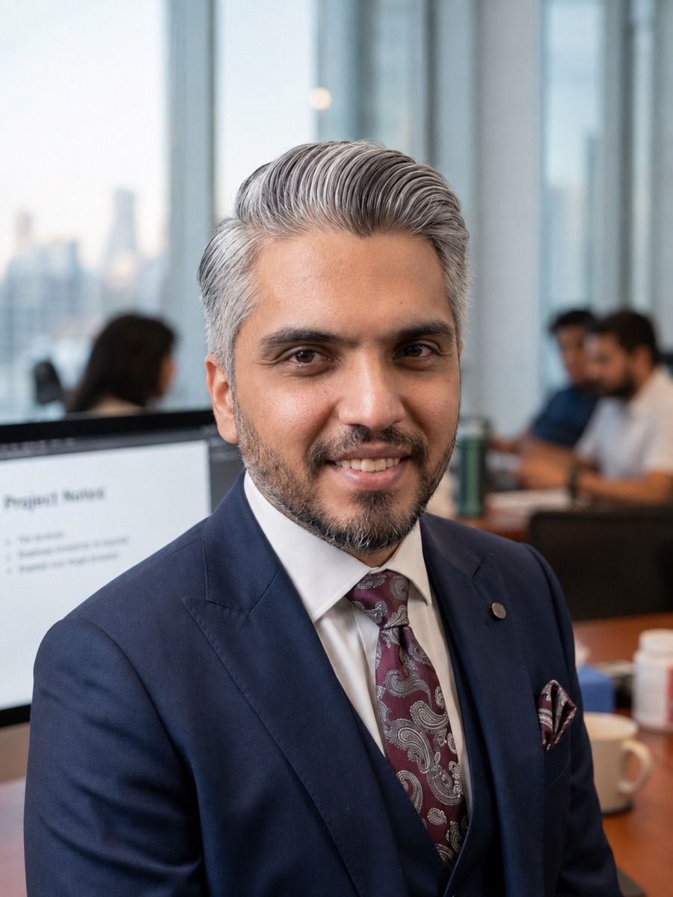

AI Engineer / Dubai, UAE
Haitham
Mohamed
Production RAG & agentic systems, end‑to‑end.
I architect and ship AI systems that reach real users — hybrid retrieval, multi-agent orchestration, and eval-gated iteration. Native Arabic speaker with rare Arabic NLP depth in the UAE market.

Dubai · 2026About
I build production RAG and agentic systems, end-to-end — and I came to engineering through making things.
My path runs Fine Arts → MCA → motion graphics → automation → AI engineering. Years directing video for the Dubai Crown Prince's office taught me to ship under real constraints; that instinct now goes into retrieval pipelines and multi-agent systems instead of timelines.
The through-line is Arabic. As a native speaker I work fluently across MSA and Gulf dialect, which turns out to be a rare and decisive advantage when the hard part of a system is understanding the language, not just the model. I'm currently pursuing a DBA in AI & Machine Learning at Walsh College.
Selected Work
Production systems, not demos.
-
Hamdan
Office of HH Sheikh Hamdan bin Mohammed Al Maktoum (Nadi)
A production Arabic RAG platform for cultural-heritage queries. Hybrid search over pgvector + full-text + trigram with multi-stage reranking, multi-agent orchestration (research, editor, and validator roles), and a 150+ query evaluation harness with golden sets and Arabic polysemy suites.
- LangGraph
- pgvector
- n8n
- Claude / GPT-4o
-
Faz3 — Comment Triage
Faz3 Social Media Intelligence
An Arabic content-classification pipeline for social-media moderation: dialect-aware NLP across MSA, Gulf, and Egyptian, code-switching detection, confidence scoring, and a human-in-the-loop moderator queue — assisted triage, never auto-removal.
- Supabase
- Dialect NLP
- Confidence scoring
-
ReguLense
Independent project — UAE health regulation Q&A
Hybrid-retrieval Q&A over DHA, DoH, and MOHAP regulation with version awareness: tracks which document is in force vs. superseded — parsed from each PDF's own printed metadata, never the filename — and excludes superseded versions from retrieval by default. Tiered confidence abstains below a calibrated floor instead of answering with false certainty, and every citation highlights the exact cited passage via per-element bounding-box provenance, not a guessed window. Deployed split across Vercel and Render, with automatic LLM-provider failover.
- FastAPI
- pgvector
- Docling
- React
- TypeScript
Experience
-
2024Present
AI Engineer
Office of HH Sheikh Hamdan bin Mohammed Al Maktoum (Nadi) — Dubai
- Architected and shipped Hamdan, a production Arabic RAG system with hybrid search and multi-stage reranking.
- Designed multi-agent orchestration — task decomposition, read-only research agents, single-owner editor agents, and a validator gate enforcing cross-category regression checks.
- Built a 150+ query evaluation harness: golden sets, automated before/after scoring, error taxonomy, and Arabic polysemy test suites.
- Migrating orchestration from n8n to LangGraph with LangSmith tracing for eval-driven iteration.
-
2025Present
AI Consultant
Faz3 Social Media Intelligence — Dubai
- Built an Arabic content-classification pipeline for moderation: dialect-aware NLP (MSA, Gulf, Egyptian), code-switching detection, confidence scoring, and a human-in-the-loop moderator queue.
-
20192024
Senior Motion Graphic Designer
Office of HH Sheikh Hamdan bin Mohammed Al Maktoum (Nadi) — Dubai
- Led video production for the Crown Prince's office; integrated AI tools into production workflows and transitioned into a dedicated AI engineering role.
Capabilities
Systems
- RAG & vector retrieval
- Agentic orchestration
- LLM evaluation & prompt engineering
- Human-in-the-loop design
Arabic NLP
- MSA & Gulf / Egyptian dialect
- Code-switching detection
- Polysemy & semantic search
- Arabic full-text (tsvector)
Stack
- LangGraph
- LangSmith
- pgvector
- Supabase
- FastAPI
- Docker
- AWS
- OpenAI · Claude · Gemini
Education
- Doctorate in Business Administration — AI & Machine Learning Walsh College, USA In progress
- Postgraduate Program — AI & Machine Learning UT Austin McCombs School of Business In progress
- Master of Computer Applications (MCA) Amity University, India Completed
- Bachelor of Fine Arts — Animation Helwan University, Cairo Completed
Contact
Dubai, UAE — open to AI engineering roles across the UAE & GCC, and remote.